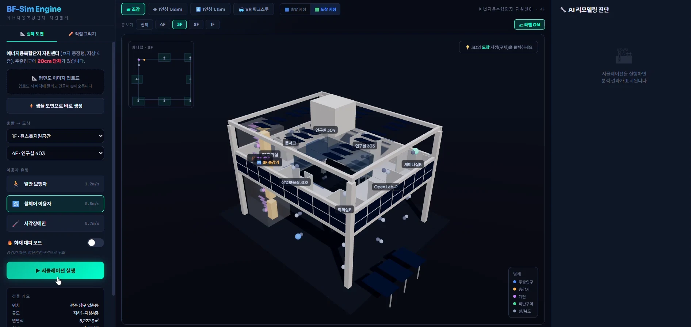

BIM-BASED ACCESSIBLE ROUTES
모두의 이동을 위한 BIM 경로 탐색
BIM 공간 정보를 바탕으로 보행 방식에 따른 경로를 구분하고, 휠체어 사용자의 이동 가능성을 시각화하는 프로토타입을 제시했습니다.
- YEAR / SEMESTER
- 4학년 1학기 · 2026
- COURSE
- 스마트건축시스템
- CONTRIBUTION
- 6조 팀과제
- SITE / SUBJECT
- 휠체어 이동 가능 경로 시각화

THE IDEA
생각의 출발점
같은 출발점과 도착점도 이용자에 따라 다른 경로가 필요합니다. 팀과제에서는 계단·엘리베이터·복도 등의 공간 요소를 구분하고, 일반 보행과 무장애 이동 경로를 비교하는 화면을 구성했습니다.
- 01
건물을 이동의 관점으로 읽기
장애물과 층간 이동 수단에 주목해 공간 정보를 정리했습니다. 사례 모델은 에너지융복합단지 지원센터이며, 층과 구역을 선택하며 살펴보는 구성을 제시했습니다.
- 02
이용자에 따라 달라지는 경로
계단을 이용할 수 있는 일반 경로와 엘리베이터를 활용하는 접근 가능한 경로를 구분했습니다. 색으로 표시한 복도·벽·계단·승강기를 통해 경로와 공간의 관계를 읽도록 했습니다.
- 03
시점과 조건을 바꾸는 인터페이스
전체 보기, 보행자·휠체어 높이의 시점, 출발·도착점 선택과 층별 보기를 표현했습니다. 이동의 차이를 눈으로 비교하고 개선이 필요한 지점을 탐색하는 도구를 목표로 했습니다.
PROCESS & OUTCOME
과정과 결과
사진을 누르면 크게 볼 수 있습니다.